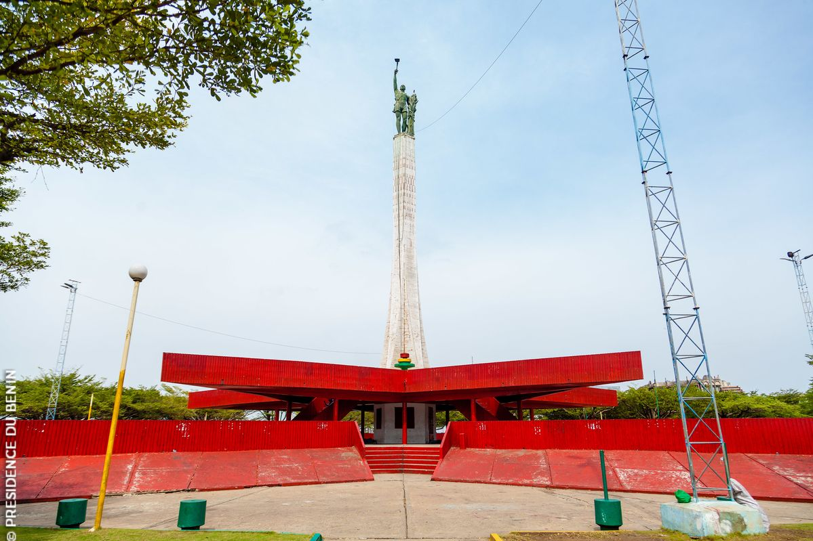
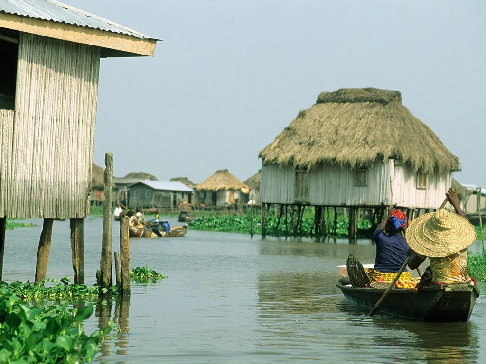
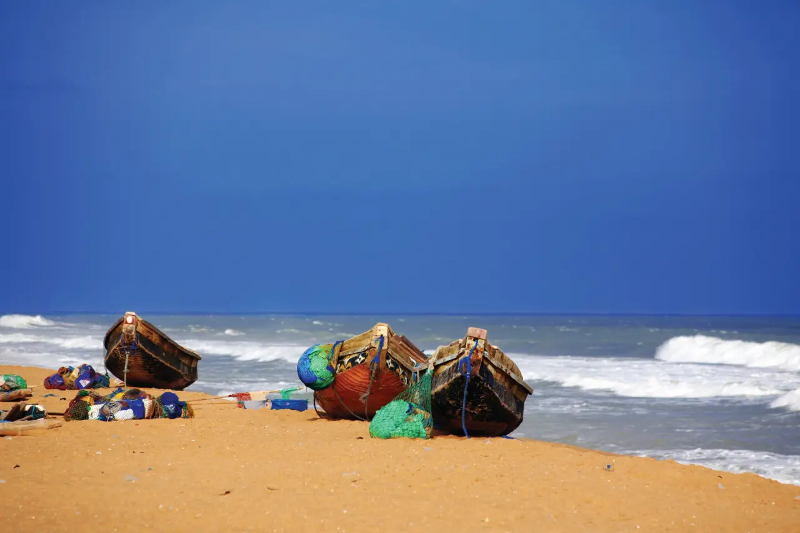

Entre ville et mémoire
Marchés, art contemporain, Route des Esclaves et coucher de soleil sur l’Atlantique.
Personnaliser ce circuitDu littoral aux palais royaux, découvrez le Bénin avec des itinéraires construits pour prendre le temps.
Chaque circuit est modulable : durée, hébergements, activités et accompagnement local.

Marchés, art contemporain, Route des Esclaves et coucher de soleil sur l’Atlantique.
Personnaliser ce circuit
Une immersion entre patrimoine afro-brésilien, pirogues et quartiers historiques.
Personnaliser ce circuit
Une parenthèse entre plage, villages côtiers et paysages qui invitent à ralentir.
Personnaliser ce circuit